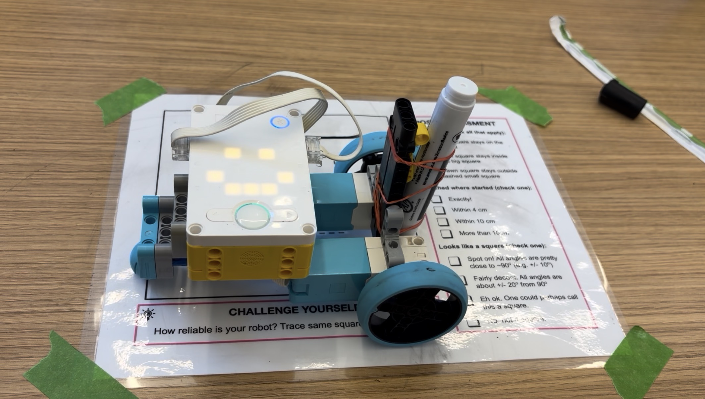
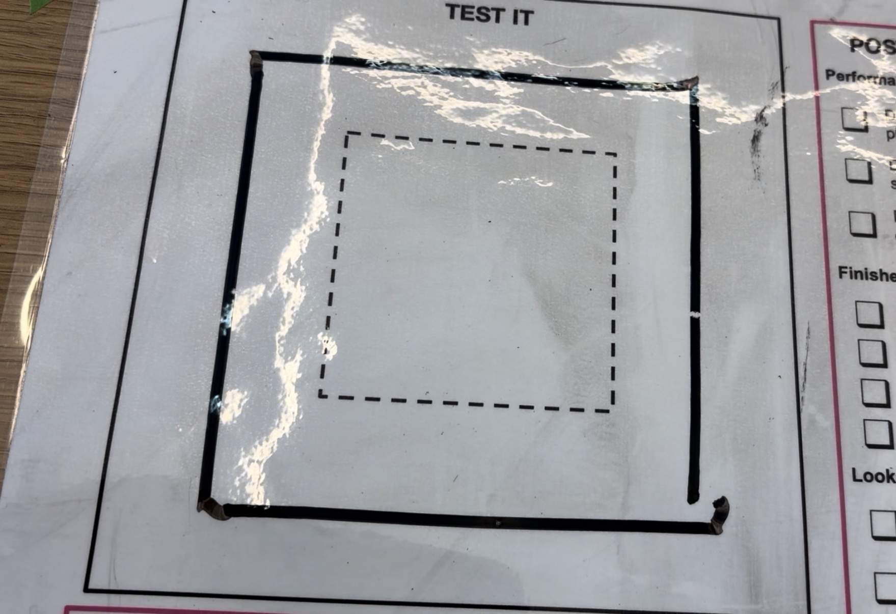

We used our kits to make a robot that drew as good of a square as we could. A big theme of this assignment was reliability. We could practice as much as we wanted, but we only got one chance to prove that it worked. The goal was to draw a square that stayed inside the outer line but outside the inner line. The most challenging part was figuring out how to position the marker so that it was directly in between the wheels so that the robot could make the corners as sharp as possible.